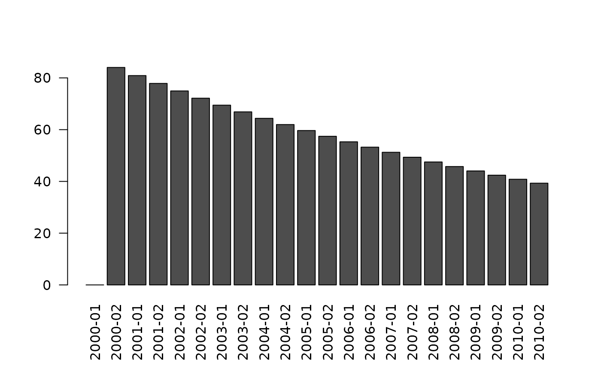

action_spmodel.RdA simple production model can be used in place of a set of gadget stock dynamics actions.
g3a_spmodel_logistic(
r = g3_parameterized("spm_r", lower = 0.01, upper = 1, value = 0.5,
by_stock = by_stock),
p = g3_parameterized("spm_p", lower = 0.01, upper = 10, value = 1,
by_stock = by_stock),
K = g3_parameterized("spm_K", lower = 100, upper = 1e6, value = 1000,
by_stock = by_stock),
by_stock = TRUE)
g3a_spmodel(
stock,
spm_num = g3a_spmodel_logistic(),
spm_num_init = g3_parameterized("spm_n0", by_stock = TRUE),
spm_wgt = 1,
run_f = TRUE,
run_at = g3_action_order$initial)Parameters for the logistic model, see value section.
Change the default parameterisation (e.g. to be by 'species'), see g3_parameterized.
g3_stock object to apply the simple production model to.
formula to calculate the relative change in abundance, one of the g3a_spmodel_* functions.
Starting point for stock abundance.
formula to calculate the mean weight, if "1", then abundance in numbers == total biomass.
formula specifying a condition for running this action, default always runs.
Integer order that actions will be run within model, see g3_action_order.
The actions will define the following variables in your model, which could be reported with g3a_report_history:
Numbers added to the abundance of stock
Note that the input stock should not have g3s_age,
if the stock was broken up by age the model would quickly not make sense.
Returns a formula for use as spm_num:
$$ r s (1 - (\frac{s}{K})^p) $$
r argument, by default the (stock)_spm_r model parameter
p argument, by default the (stock)_spm_p model parameter
K argument, by default the (stock)_spm_K model parameter
# NB: Stock only has one length group, 30:40. So the stocks midlen is 35
stock_a <- g3_stock(c("stock", "a"), c(30, 40), open_ended = FALSE)
stocks <- list(stock_a)
fleet_a <- g3_fleet(c('fleet', "a"))
actions <- list(
g3a_time(2000, 2010, step_lengths = c(6,6), project_years = 0),
g3a_spmodel(
stock_a ),
g3a_predate(
fleet_a,
stocks,
suitabilities = 1,
catchability_f = g3a_predate_catchability_linearfleet(
g3_parameterized("effort", value = 1e-1, by_predator = TRUE) )),
# NB: Dummy parameter so model will compile in TMB
~{nll <- nll + g3_param("x", value = 0, optimise = TRUE)} )
actions <- c(actions, list(
# NB: Late reporting for abundance
g3a_report_history(actions, "__num$|__wgt$", out_prefix="dend_"),
g3a_report_detail(actions) ))
model_fn <- g3_to_r(actions)
attr(model_fn, 'parameter_template') |>
# Surplus production model parameters
g3_init_val("*.spm_n0", 1e4) |>
g3_init_val("*.spm_r", 0.1) |>
g3_init_val("*.spm_p", 0.01) |>
g3_init_val("*.spm_K", 1e8, lower = 0, upper = 1e20) |>
identity() -> params.in
r <- attributes(model_fn(params.in))
barplot(r$dend_stock_a__num, las = 2)
barplot(r$detail_stock_a__renewalnum, las = 2)
